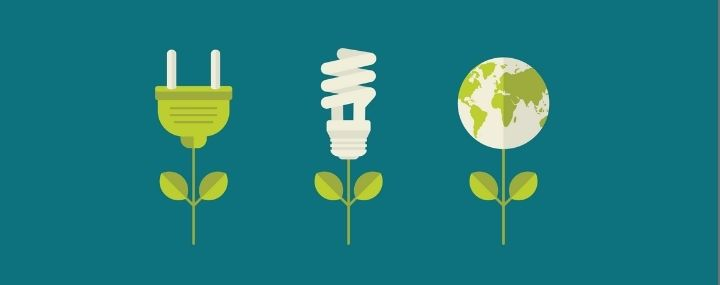

Energia
Reduza seu consumo de energia elétrica com atitudes simples e eficazes no dia-a-dia.
- Use ventilador em vez de ar-condicionado
- Instale lâmpadas LED
- Desligue aparelhos em standby
Aprenda práticas simples de reaproveitamento e sustentabilidade que fazem diferença no planeta e na sua vida.
Descubra as DicasExplore as principais áreas onde você pode fazer a diferença:
Reduza seu consumo de energia elétrica com atitudes simples e eficazes no dia-a-dia.

Faça escolhas conscientes na hora de comprar e usar roupas, reduzindo o impacto ambiental.
Adote hábitos de consumo responsável que beneficiam você e o planeta.
O projeto Reaproveita foi desenvolvido com o objetivo de promover práticas sustentáveis e conscientes no dia-a-dia, atendendo aos Objetivos de Desenvolvimento Sustentável (ODS) da ONU:
Promover o reaproveitamento integral de alimentos e reduzir o desperdício, contribuindo para uma alimentação mais consciente e sustentável.
Incentivar o consumo responsável e a produção sustentável através de práticas ecológicas no dia-a-dia.